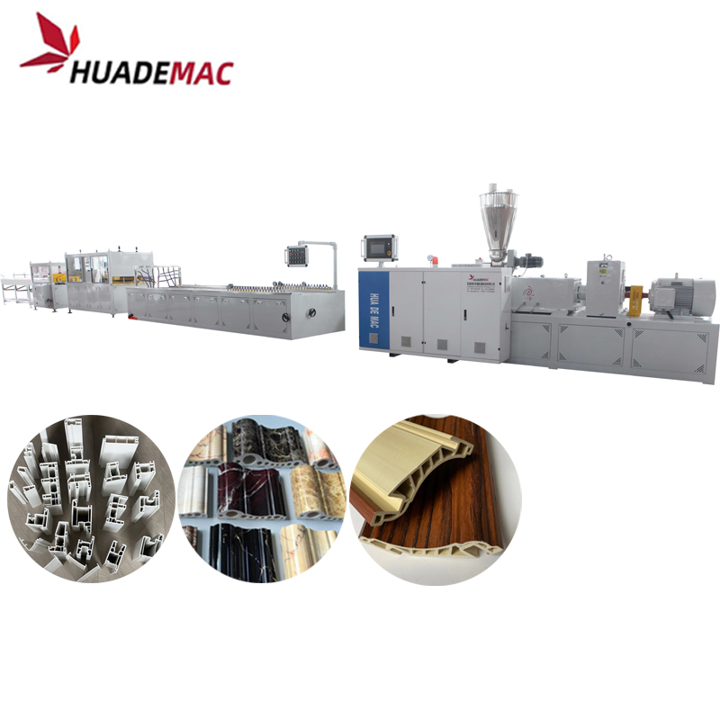
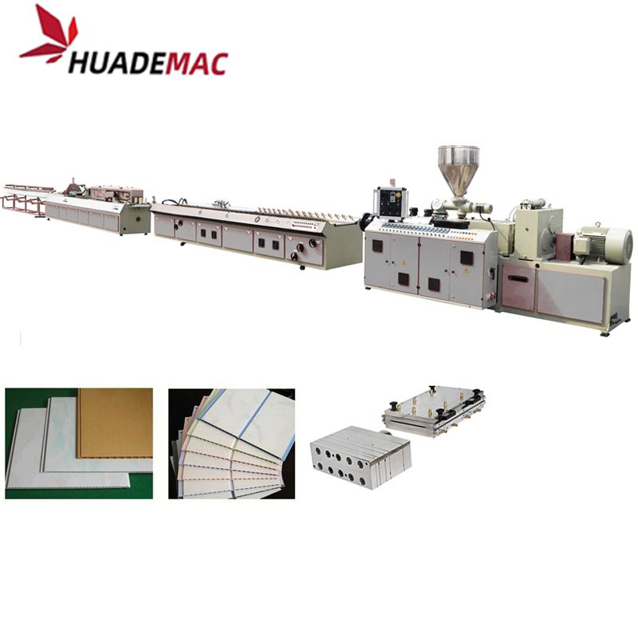
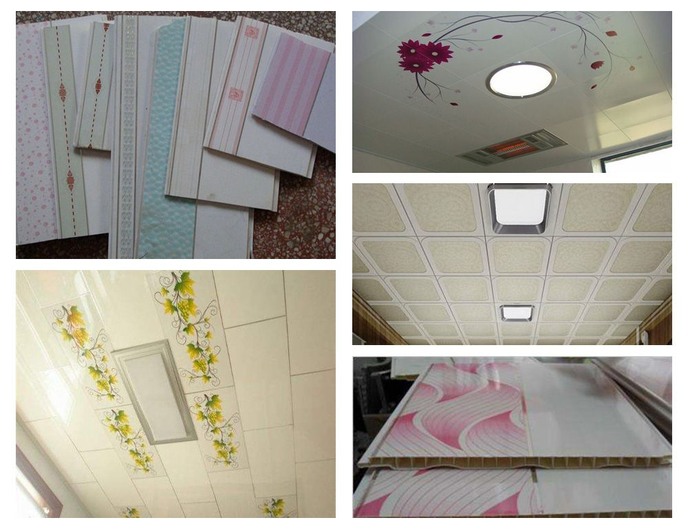

PVC Ceiling Panel Profile Extrusion Line
Extrude PVC ceiling panels in a choice of widths and cross-sections.
Inquire about this product Prepare a detailed project brief
Equipment overview
PVC ceiling panel with width of 200mm,250mm,300mm,with different section shape and height.
The surface of PVC ceiling can be treated by double color printing and coated with glossy oil, or by heat transfer printing, or by lamination, which can make marble, wooden design on the surface of products.
PVC ceiling panel is wide used in the house decoration , office decoration , kitchen room , washing room decoration , it’s environment-friendly raw materials and can be recycled use , it’s has wide market prospect .
The PVC ceiling panel making machine equip with the conical twin screw extruder , converter control system , OMRON temperature control unit , it has wide control range , accuracy temperature control and easy to operate , the auxiliary equipment consist of vacuum calibration mould & platform, hauling off machine, hot stamping machine or laminating machine , cutting machine, stack machine ,etc.
PVC ceiling panel production process : the screw feeder feed the raw materials to the mixer unit , after mix enough and the temperature reach the set temperature , the hot mixed raw materials will discharge into the cooling mixer automatically , then the spring feeder feed the mixed raw materials into the twin screw extruder , after plasticizing , extrusion and calibration , the ceiling panel will come out from the mould and follow into the cooling equipment , via the synchronous haul off machine , the ceiling panel enter the cutter , the cutter equip with the meter counter , it can cut different size according to the set length automatically .
The PVC ceiling panel making machine equip with the PID automatic simple control system , easy operate and accuracy control system , for the new investor customers , would supply the complete turn-key service , such as the capital budgets , workshop design , raw material supply and technology training . also after the production line run smoothly , we also supply the long-term technology support .
Technical specifications
Reference configurations from the product catalogue. Confirm output, dimensions and equipment selection for your material and project.
| Applicable Width | 200-250mm | 300mm |
|---|---|---|
| Extruder | SJZ51/105 | SJZ55/110 |
| Motor power(Kw) | 22 | 37 |
| Capacity(kg/h) | 100-150 | 200-250 |
Detailed Images
Application
Plastics extrusion is a high-volume manufacturing process in which raw plastic is melted and formed into a continuous profile. With the development of economy, more and more plastics are used in people's daily life. Consequently, a large quantity of plastic extruder, plastic extrusion line, plastic extrusion machine are used to process PP, LLDPE, LDPE, HDPE, PVC, ABS, etc. in pipe extrusion, profile extrusion, filament extrusion, film extrusion, sheet extrusion and pelletizing.
PVC ceiling panel is wide used in the house decoration , office decoration , kitchen room , washing room decoration , it’s environment-friendly raw materials and can be recycled use , it’s has wide market prospect .

Equipment video
Ask about this machine
PVC Ceiling Panel Profile Extrusion Line